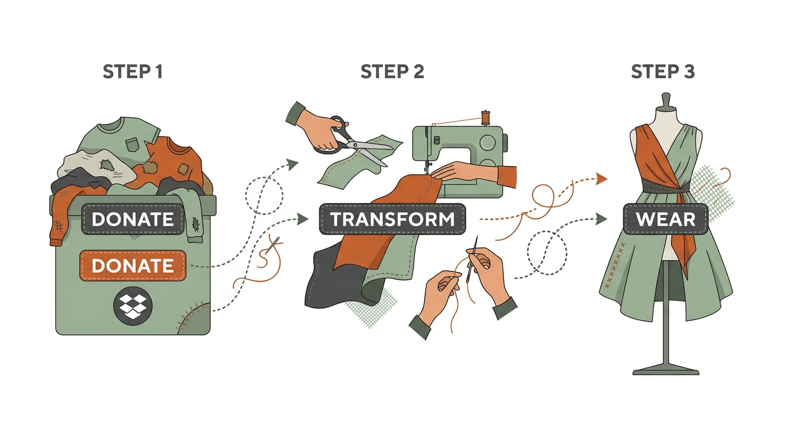
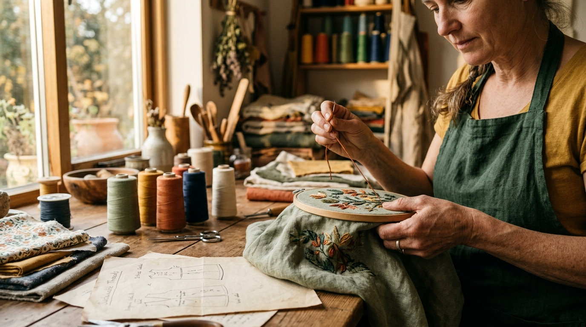
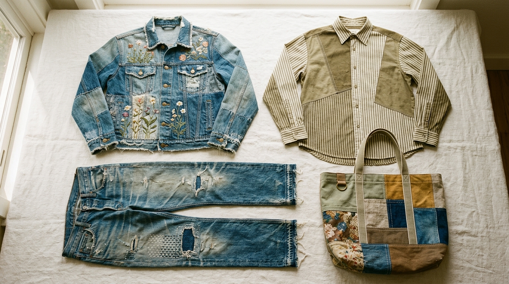

Your Old Clothes, Our New Craft.
We transform discarded garments into one-of-a-kind masterpieces — handcrafted with intention, not mass production.
Explore Our Craft
Your Old Clothes, Our New Craft.
We transform discarded garments into one-of-a-kind masterpieces — handcrafted with intention, not mass production.
Explore Our CraftThe Second Stitch is more than a fashion brand — it's a movement. Born in the Ignis design studio, we take discarded garments and transform them into one-of-a-kind masterpieces that honour the memories woven into every thread.
In a world drowning in fast fashion waste, we choose a different path. We choose craft over consumption. Stories over seasons. The second stitch.
Our Process

Drop off your old, worn, or forgotten clothes at our community collection points. Every garment has potential.
Our artisans deconstruct, reimagine, and handcraft your fabric into a brand-new design using patchwork, embroidery, and fabric fusion.
Receive a garment that's uniquely yours — a wearable piece of art with a story, not a barcode.
Our Impact So Far

The Second Stitch was born from a simple question: What if the clothes we throw away could become the clothes we treasure most?
Founded in the Ignis design studio, our brand started as a bold experiment — taking old, discarded garments and giving them a second act. Not by patching holes or hiding flaws, but by completely reimagining them into high-end, one-of-a-kind fashion pieces.
Every single garment is a unique, 1-of-1 masterpiece created by hand. No two pieces are ever the same. No sizes, no seasons, no mass production — just craft, care, and character.
We don't buy new fabrics. We don't run factories. Our raw materials come from your wardrobes, your communities, and your memories. Near-zero carbon footprint on every piece.
When you wear a Second Stitch garment, you're not just wearing fashion. You're wearing someone's story, reimagined for a new chapter.
The fashion industry is one of the most destructive forces on our planet:
of textile waste produced globally every year
of water needed for just ONE cotton t-shirt — enough drinking water for one person for 2.5 years
emissions come from fashion — more than all international flights and shipping combined
end up in landfills or are incinerated every single year
While fast fashion erases the planet, The Second Stitch reclaims it — one garment at a time.
Our Craft
Every Piece is a Masterpiece. Handcrafted, One-of-a-Kind, Unrepeatable.

Loading products...
Community drop-zones & partnerships. Zero new materials.
Carefully taken apart. Fabric studied, strength assessed. Nothing wasted.
Patchwork, fabric fusion, custom embroidery & sashiko repair.
Hand-finished, quality-checked. A Second Stitch tag = intention.
Got a piece of clothing that means the world to you but sits forgotten in your wardrobe? Send it to us.
Your grandmother's saree. Your father's old work shirt. Your childhood denim jacket.
We'll transform it into a high-end, wearable masterpiece — preserving the memory, reinventing the style. This isn't alteration. This is resurrection.
Request a Custom TransformationOur Impact
| Category | ❌ Fast Fashion | ✅ The Second Stitch |
|---|---|---|
| Materials | New cotton, synthetic fibres, polyester | 100% pre-owned & reclaimed fabrics |
| Water Usage | 2,700L per t-shirt | Near zero — fabric already exists |
| Carbon Emissions | Massive factory & shipping footprint | Near-zero — local handcraft only |
| Uniqueness | Millions of identical copies | Every piece is 1-of-1 |
| Waste | 85% ends up in landfill | Zero waste philosophy |
| Connection | Disposable, forgettable | Every garment carries a story |
Behind every Second Stitch garment is a real person, a real memory, and a real transformation.
"My grandmother's saree became my graduation jacket."
I couldn't bear to throw away Nani's old saree, but it had been sitting untouched for years. The Second Stitch turned it into a cropped jacket with the original embroidery preserved on the back. I wore it to my graduation. She would have loved it.
"Three old t-shirts became one statement piece."
I had band tees from school that didn't fit anymore but meant everything to me. They fused them into a patchwork hoodie. Every time I wear it, I'm wearing my teenage years.
Get In Touch
Want to donate old clothes? Drop them off at our community collection points or contact us to arrange a pickup. Every garment you donate is a garment saved from landfill.